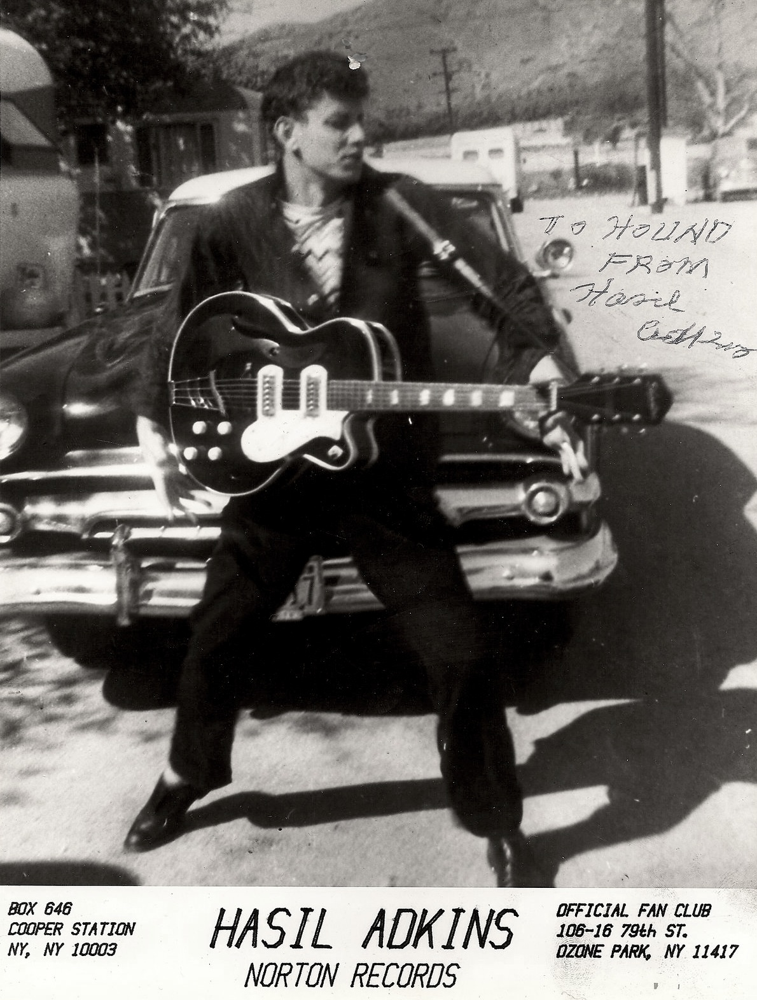

Truly Ruby was created by the Ruby & Bootstrap Enlightened duo
Alicina Memar & Scott Thompson
Yours Truly
Sources:
- Ruby Logo: https://commons.wikimedia.org/wiki/File:Ruby_logo_64x64.png
- adkins 2 photo http://www.rocknrollfreaks.com/wp-content/uploads/2015/11/tumblr_mo7vdt13Xp1rtynt1o1_1280.jpg
